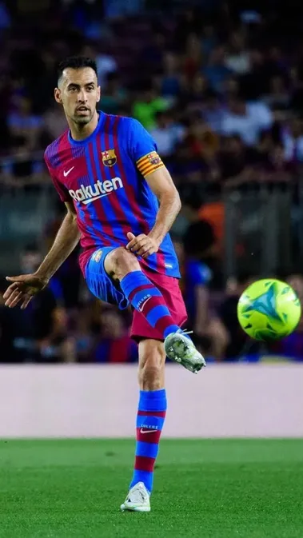

세르히오 부스케츠 Sergio Busquets
키 188cm / 체중 74kg
스페인 국적의 인터 마이애미 CF 소속 축구 선수. 포지션은 수비형 미드필더.
경기에서 부각이 되진 않지만 부스케츠의 스타일은 '기술' 위주다. 숏 패스, 롱 패스를 가리지 않는 패싱 기술 그리고 정교한 볼컨트롤과 섬세한 테크닉을 활용한 탈압박, 뛰어난 판단력과 포지셔닝을 통해 끊임없이 전술을 변화시키는 것이 부스케츠의 장점이다. 상대의 전방 압박을 숏패스나 혹은 탈압박 기술로 벗겨내고 골키퍼 - 수비수, 수비수 - 미드필더 사이에서 패스 루트를 만들어내 동료들을 돕는 역할을 맡는다.

(드래그백)
특히 사비의 카라콜레스, 이니에스타의 라 크로케타처럼 부스케츠의 상징이자 시그니처 무브라고 볼 수 있는 스킬로 '드래그 백'을 뽑을 수 있다. 큰 키와 긴 하체를 이용, 부스케츠의 볼을 탈취하기 위해 달려드는 상대 미드진을 발바닥으로 정교하게 공을 뒤로 빼내고 앞이나 옆으로 공을 이동시키면서 압박을 풀어내는 플레이로 수많은 선수들이 굴욕을 당했다.

(0.9골로 유명한 움짤)
여기에 '홀딩' 위치에서의 숏패스를 통한 유기적인 탈압박 말고도 가끔씩 넓은 시야를 발휘해 날카롭고 정교한 스루패스를 뿌리기도 하는데, 수아레스와 메시가 투톱으로 선 이후부터는 그 위력은 한층 더 강해졌다. 무엇보다 부스케츠의 킬패스가 무서운 점은, 여유롭게 미드필더와 수비수들끼리 티키타카를 하다가도 빠르고 기민한 판단력과 경기장 전체를 관망하는 시야를 통해 전혀 예상치 못한 타이밍에 라인을 깨고 침투하는 공격수나 윙백에게 킬패스를 뿌려줄 수 있다는 점이다. 또한 부스케츠의 스루패스는 일반 스루패스와는 다르게 매우 정확하고 천천히 쇄도하는 공격수에게 뿌려지는데, 이를 통해 부스케츠의 뛰어난 시야와 판단력을 알 수 있다.
또한 간과해선 안되는 것이 부스케츠는 주로 후방에서 머물러서 그렇지 롱패스만 봐도 킥능력이 상당히 좋은데 바르셀로나 말년에는 본인이 직접 과감하게 중거리 슈팅으로 공격을 마무리 짓는 모습도 보여줬다.